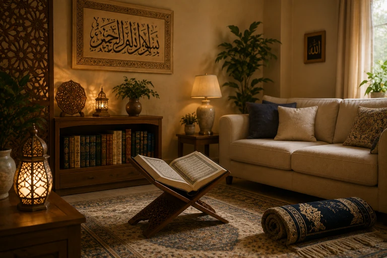
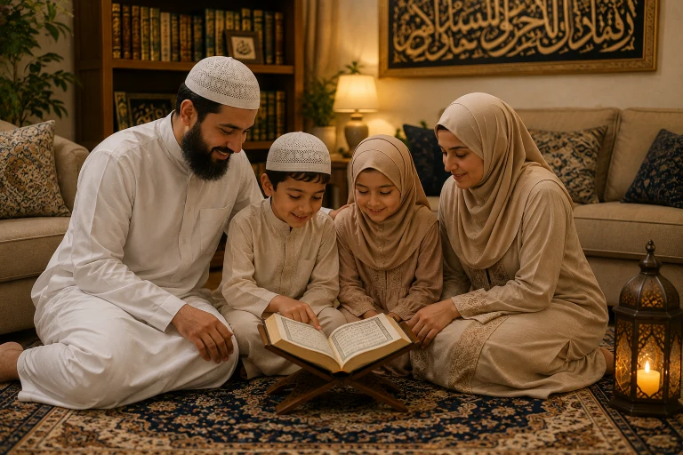
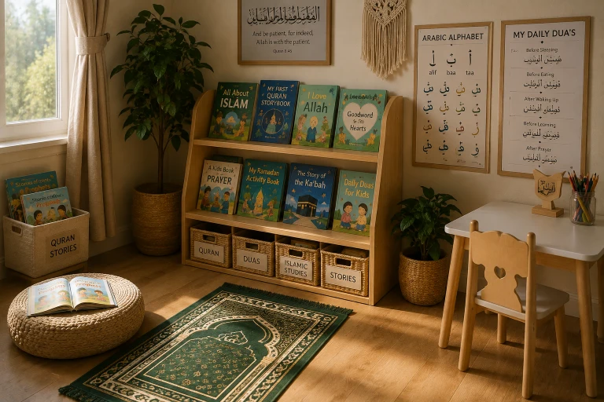

Your home is more than just four walls and a roof; it is the first school your children will ever attend, the sanctuary where their hearts find rest, and the fortress that protects their Iman from the outside world. In a time when the outside world is filled with noise, fitnah, and distraction, creating a peaceful, spiritually uplifting Islamic environment at home is not just a luxury — it is a necessity. In this comprehensive guide, we will explore practical, Sunnah-based steps to transform your house into a home where angels love to visit and where your family's faith can flourish.
📖 In This Complete Guide, You'll Learn:
- How to fill your home with the remembrance of Allah and the recitation of Quran
- Practical steps to create a dedicated, beautiful prayer corner (even in small spaces)
- The Islamic guidelines for home decor (what to avoid and what to embrace)
- The Sunnah habits of entering, leaving, and living in your home
- How to manage screen time and negative influences to protect your home's atmosphere
- How to foster an emotional environment of love, mercy, and respect
🔑 Key Takeaways
- A home filled with Quran and Dhikr is a home filled with angels and barakah.
- Physical cleanliness (Taharah) and spiritual cleanliness go hand in hand.
- Your home's decor should remind you of Allah, not distract you from Him.
- The emotional atmosphere (how you speak to each other) is just as important as the physical setup.
- Small, consistent changes can completely transform the energy of your home.

📑 In This Article
- The Spiritual Atmosphere: Quran and Dhikr
- Creating a Dedicated Prayer Corner
- Islamic Home Decor: What to Embrace and Avoid
- The Sunnah of Entering and Leaving the Home
- Cleanliness and Pleasant Scents (Taharah and Tayyib)
- Managing Screens and Negative Influences
- Fostering an Emotional Environment of Mercy
- Frequently Asked Questions
- Final Thoughts
The Spiritual Atmosphere: Quran and Dhikr
The most critical element of an Islamic home is its spiritual frequency. What is the default sound in your house? Is it the TV, loud music, or constant chatter? Or is it the soothing recitation of the Quran and the remembrance of Allah?
The Prophet (PBUH) said: "Do not make your houses as graveyards. Satan runs away from the house in which Surah Al-Baqarah is recited."
— Sahih Muslim 780Practical Steps:
- Play Quran Softly: Have a speaker playing a gentle recitation (like Surah Ar-Rahman or Surah Yasin) in the background during the day, especially in the living room or kitchen.
- Family Quran Time: Dedicate 10-15 minutes after Fajr or before bed where the whole family sits and reads or listens to the Quran together.
- Normalize Dhikr: Say "SubhanAllah", "Alhamdulillah", and "Allahu Akbar" out loud while doing chores. Let your children hear you making Dhikr naturally.
Creating a Dedicated Prayer Corner
You don't need a massive spare room to have a prayer space. Even in a small apartment, you can create a dedicated corner that signals to the brain and heart: "This is a sacred space."
How to Set It Up:
- Choose a Quiet Spot: Pick a corner that is away from the main foot traffic and the TV.
- Define the Space: Use a beautiful room divider, a tall indoor plant, or a low bookshelf to visually separate the prayer area from the rest of the room.
- Keep it Clean and Minimal: Place a clean, comfortable prayer mat. Keep a wooden Quran stand (Rehal), a basket with Tasbih (prayer beads), and perhaps a small bottle of Attar (perfume oil).
- Involve the Kids: Get a small, colorful prayer mat for your children and place it next to yours. Let them feel that this space belongs to them too.
Islamic Home Decor: What to Embrace and Avoid
Our homes reflect our values. Islamic decor should serve as a constant, gentle reminder of Allah and the Hereafter, without becoming a distraction during prayer.
What to Embrace:
- Islamic Calligraphy: Beautifully framed verses from the Quran or the 99 Names of Allah. Place them at eye level in the living room and hallway.
- Nature Photography: High-quality pictures of mountains, oceans, or forests. These encourage Tafakkur (reflection on Allah's creation).
- Modest and Clean Furniture: Keep the home tidy. Clutter creates mental stress, while cleanliness brings peace (Taharah).
Statues and 3D Figures: Islam strictly prohibits keeping statues or 3D figures of animate beings (humans or animals) in the home, as they prevent the angels of mercy from entering. Prominent Photographs: Avoid hanging large, prominent photographs of people, especially in the prayer area. Keep family photos in albums or private frames.

The Sunnah of Entering and Leaving the Home
The way we enter and leave our home sets the tone for our family's safety and barakah. The Prophet (PBUH) taught us specific etiquette for these moments.
When Entering:
- Say "Bismillah" before opening the door.
- Greet your family with "Assalamu Alaikum", even if you think the house is empty. The angels will greet you back.
- Remove your shoes neatly at the door to keep the inside clean.
When Leaving:
- Say "Bismillah, tawakkaltu 'alallah, wa la hawla wa la quwwata illa billah" (In the name of Allah, I place my trust in Allah, and there is no might nor power except with Allah).
- The Prophet (PBUH) said that whoever says this when leaving their house will be told: "You are guided, defended, and protected." (Abu Dawud 5095)
Cleanliness and Pleasant Scents (Taharah and Tayyib)
Allah is Beautiful and He loves beauty. A clean, fresh-smelling home is not just hygienic; it is spiritually uplifting. The Prophet (PBUH) loved pleasant scents and hated bad odors.
- Regular Cleaning: Establish a weekly cleaning routine. Involve the children; make it a family activity with nasheeds playing in the background.
- Use Natural Scents: Burn Bakhoor, Oud, or use essential oil diffusers with scents like musk, amber, or rose. Avoid synthetic, harsh chemical air fresheners.
- Open the Windows: Let fresh air and natural sunlight in every day. Sunlight kills bacteria and boosts mood.
Managing Screens and Negative Influences
In the digital age, the biggest threat to a peaceful Islamic home is the uncontrolled influx of screens. TVs, tablets, and phones can instantly shatter the spiritual atmosphere.
Establish "Tech-Free Zones" (like the dining table and the prayer corner) and "Tech-Free Times" (like the hour before bed and during Salah times). Keep TVs in common areas, never in bedrooms, to protect your children's innocence and sleep.
Curate what enters your home. Just as you wouldn't let a stranger walk into your living room and insult your family, don't let inappropriate content enter through your screens. Use parental controls and watch together to discuss the content Islamically.
Fostering an Emotional Environment of Mercy
A home can have beautiful calligraphy and a perfect prayer corner, but if the family members yell at each other, hold grudges, or speak harshly, the spiritual atmosphere is broken. The emotional environment is the true foundation.
The Prophet (PBUH) said: "The best of you are those who are best to their families, and I am the best of you to my family."
— Sunan At-Tirmidhi 3895, SahihHow to Build Mercy at Home:
- Use Gentle Words: Say "Please", "Thank you", and "JazakAllah Khair" to your spouse and children. Model the adab you want to see.
- Forgive Quickly: Don't let the sun set on your anger. Apologize when you are wrong, and accept apologies gracefully.
- Make Dua for Each Other: Pray for your family in your Sujood. Let them know you are praying for them. This builds an unbreakable bond of love.

Frequently Asked Questions
🌱 Start with One Small Change Today
You don't have to overhaul your entire home overnight. Start with one thing: buy a beautiful Quran stand today, or establish the habit of saying "Assalamu Alaikum" loudly when you enter. May Allah bless your home and make it a place of peace, mercy, and barakah.
What is one change you will make in your home this week? Share below!
Final Thoughts
Creating an Islamic home environment is a continuous journey, not a one-time project. It requires intention, consistency, and a lot of dua. There will be days when the house is messy, the kids are loud, and you feel like you're failing. Forgive yourself, take a deep breath, and remember that Allah loves those who strive. Every small effort you make to bring the remembrance of Allah into your home is an act of worship. May Allah make our homes a source of comfort in this world and a means to enter Jannah in the Hereafter. Ameen.